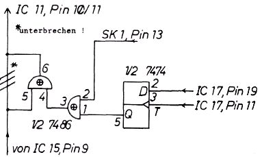
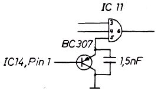

Nascom Journal |
4/80 |
Muster erzeugen, der Phantasie des Benutzers sind keine Grenzen gesetzt.
Wenn die CPU in schneller Folge auf das Video-RAM zugreift, entstehen kleine Störungen auf dem Bildschirm. Um diese Erscheinung zu unterbinden, wurden in der Vergangenheit einige Vorschläge gemacht, die aber nicht ohne eine zusätzliche IS auskommen. Mein Vorschlag benötigt dagegen nur zwei kleinere Bauteile und arbeitet seit ca. drei Monaten einwandfrei.
Aufbau:
Zunächst zieht man IC 11 aus der Fassung, biegt Pin 5 so um, daß er waagerecht vom IC absteht und lötet einen PNP-Transistor (z.B. BC 307) mit dem Emitter an Pin 5 und Kollektor an Pin 7, dort wo er abgebogen ist. Nun wird ein 1,5 nF Kondensator parallel dazu gelötet (also auch an die Pins 5 und 7). Man sollte schnell löten, damit der IC nicht zerstört wird. Die Basis des Transistors verbindet man mit einem Draht mit IC 14, Pin 1. Greift nun die CPU auf das Video-RAM zu, so wird der Kondensator durch den Transistor entladen, und es gelangen keine Bildinformationen auf den Bildschirm. Erst wenn sich der Kondensator durch einen in IC 11 befindlichen Widerstand "langsam" (ca. 30 microsec.) wieder aufgeladen hat, gelangen neue Informationen zum Bildschirm. Dann ist jedoch der Zugriff auf das RAM längst vorbei, und es entstehen keine Störungen mehr.
Karl-Horst Poschmann
Im Nascom-1 Construction Manual wird der Einbau eines Relais anstelle der LED 1 (‚DRIVE‘) vorgeschlagen, um den Cassettenrecorder vom Computer aus ein- und ausschalten zu können. Vor allem, wenn man größere Datenmengen (z.B. Text) mit der Grundversion des Nascom-1 verarbeiten will, und das ist durchaus möglich, wenn man keine zu großen Anforderungen an die Geschwindigkeit stellt, ist ein automatisches Schalten des Recorders unbedingt notwendig. Bald nach Inbetriebnahme meines Nascom-1 versuchte ich also, ein passendes Relais aufzutreiben – leider vergebens. Da ich keine Lust hatte, länger zu warten, habe ich die im Folgenden beschriebene Schaltung aufgebaut, die zudem eine Reihe von Vorteilen bringt;
| Seite 9 von 20 |
|---|